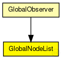

This documentation is released under the Creative Commons license
This documentation is released under the Creative Commons licenseGlobal module that supports bootstrap process and key distribution
The following diagram shows usage relationships between types. Unresolved types are missing from the diagram. Click here to see the full picture.
The following diagram shows inheritance relationships for this type. Unresolved types are missing from the diagram. Click here to see the full picture.
If a module type shows up more than once, that means it has been defined in more than one NED file.
| GlobalObserver (compound module) |
global module that contains the globalNodeList and the globalStatistics module |
| Name | Type | Default value | Description |
|---|---|---|---|
| maliciousNodeProbability | double |
probability for a node to be malicious on creation |
|
| maliciousNodeChange | bool |
dynamically change number of malicious nodes |
|
| maliciousNodeChangeStartTime | double |
simTime at which nodes begin to become malicious |
|
| maliciousNodeChangeRate | double |
number of nodes to change to malicious compared to all nodes |
|
| maliciousNodeChangeInterval | double |
time between two node changes to malicious |
|
| maliciousNodeChangeStartValue | double |
minimum amount of malicious nodes in the peerSet |
|
| maliciousNodeChangeStopValue | double |
maximum amount of malicious nodes in the peerSet |
|
| maxNumberOfKeys | int |
maximum number of overlay keys the bootstrap oracle handles |
|
| keyProbability | double |
probability of keys to be owned by nodes |
| Name | Value | Description |
|---|---|---|
| display | i=block/control |
// // Global module that supports bootstrap process and key distribution // simple GlobalNodeList { parameters: double maliciousNodeProbability; // probability for a node to be malicious on creation bool maliciousNodeChange; // dynamically change number of malicious nodes double maliciousNodeChangeStartTime @unit(s); // simTime at which nodes begin to become malicious volatile double maliciousNodeChangeRate; // number of nodes to change to malicious compared to all nodes volatile double maliciousNodeChangeInterval @unit(s); // time between two node changes to malicious volatile double maliciousNodeChangeStartValue; // minimum amount of malicious nodes in the peerSet volatile double maliciousNodeChangeStopValue; // maximum amount of malicious nodes in the peerSet int maxNumberOfKeys; // maximum number of overlay keys the bootstrap oracle handles double keyProbability; // probability of keys to be owned by nodes @display("i=block/control"); }
This documentation is released under the Creative Commons license